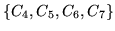
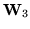

Rather than specifying static component groupings or classes, a robust
and dynamic method is used for the construction of further transformations
as more adaptation data becomes available. MLLR makes
use of a regression class tree to group the Gaussians in the
model set, so that the set of transformations to be estimated can be
chosen according to the amount and type of adaptation data that is
available. The tying of each transformation across a number of mixture
components makes it possible to adapt distributions for which there
were no observations at all. With this process all models can be
adapted and the adaptation process is dynamically refined when more
adaptation data becomes available.
The regression class tree is constructed so as to cluster together components that are close in acoustic space, so that similar components can be transformed in a similar way. Note that the tree is built using the original speaker independent model set, and is thus independent of any new speaker. The tree is constructed with a centroid splitting algorithm, which uses a Euclidean distance measure. For more details see section 10.7. The terminal nodes or leaves of the tree specify the final component groupings, and are termed the base (regression) classes. Each Gaussian component of a model set belongs to one particular base class. The tool HHED can be used to build a binary regression class tree, and to label each component with a base class number. Both the tree and component base class numbers can be saved as part of the MMF, or simply stored separately. Please refer to section 10.7 for further details.
Figure 9.1 shows a simple example of a binary regression tree with four base classes, denoted as . During ``dynamic'' adaptation, the occupation counts are accumulated for each of the regression base classes. The diagram shows a solid arrow and circle (or node), indicating that there is sufficient data for a transformation matrix to be generated using the data associated with that class. A dotted line and circle indicates that there is insufficient data. For example neither node 6 or 7 has sufficient data; however when pooled at node 3, there is sufficient adaptation data. The amount of data that is ``determined'' as sufficient is set as a configuration option for HEREST (see reference section 17.6).
HEREST uses a top-down approach to traverse the regression class tree. Here the search starts at the root node and progresses down the tree generating transforms only for those nodes which
In the example shown in figure 9.1, transforms are constructed only for regression nodes 2, 3 and 4, which can be denoted as ,  and . Hence when the transformed model set is required, the transformation matrices (mean and variance) are applied in the following fashion to the Gaussian components in each base class:-
At this point it is interesting to note that the global adaptation case is the same as a tree with just a root node, and is in fact treated as such.